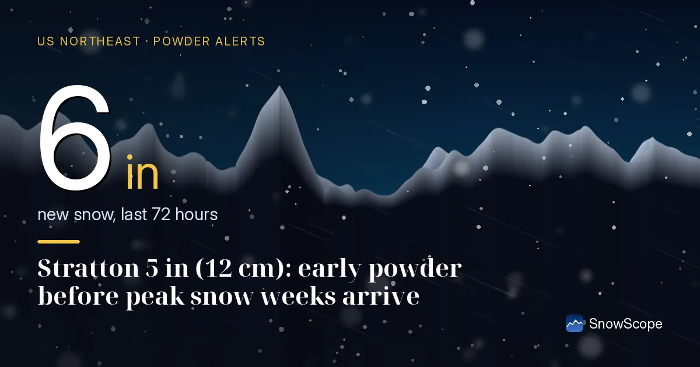
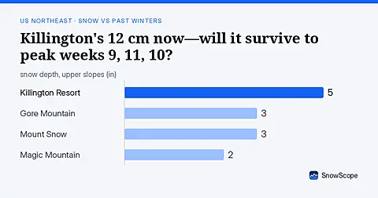
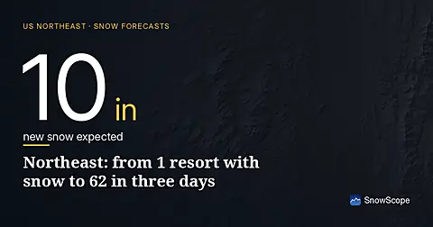

Stratton 5 in (12 cm): early powder before peak snow weeks arrive
Stratton woke up this morning with 5 in (12 cm) on its upper slopes after a heavy, wet snow event dropped 6 in (16 cm) over three days. Early-season powder in November stands out as unusual—the Northeast's best snow weeks still lie ahead, in the depth-building season that runs through late February and early March.
See the live snow forecast for Stratton in the SnowScope appSnow depth, powder alerts and the 3D map, free.
What's on the mountain now
Stratton's upper slopes show 5 in (12 cm) this morning. The base has just 2 in (2 cm), mid-mountain about 2.5 in (6 cm). All is fresh from the last three days, with 3 in (8 cm) falling in the past 24 hours. The wet, heavy character of November snow—formed in warmer air masses—means it is denser than deep-winter powder. On upper slopes it is skiable, but rocks and thin patches are a hazard below mid-mountain. When snow this thin sits on bare ground, exposed bedrock is a risk on every run.
| Resort | Snow depth | New snow, 72 h | Coming, next days | Top |
|---|---|---|---|---|
| Stratton | 5 in (12 cm) | 6 in (16 cm) | 1 in (2 cm) | 3,881 ft (1,183 m) |
| Killington Resort | 5 in (12 cm) | 5 in (12 cm) | 1 in (2 cm) | 4,140 ft (1,262 m) |
| Mount Snow | 3 in (8 cm) | 5 in (12 cm) | 1 in (2 cm) | 3,586 ft (1,093 m) |
| Okemo Mountain | 2 in (5 cm) | 4 in (11 cm) | 0 in (1 cm) | 3,320 ft (1,012 m) |
| Gore Mountain | 3 in (8 cm) | 4 in (10 cm) | 1 in (2 cm) | 3,583 ft (1,092 m) |

The region woke up fast
Two days ago, only 6 of the Northeast's 112 resorts had measurable snow. Today, 28 do. Snow-covered land jumped from 240 square kilometres to 14,420 square kilometres. By the 16th, that will likely shrink to 7,130 square kilometres as lower elevations warm. This system shows how temporary early-season snow is: the high ridges hold it best; lower bases lose it fast.
When does deep snow really come?
At Stratton's mid-height (2,950 feet [895 m]), SnowScope shows 2.5 in (6 cm) today. That is deeper than what sat there in 42 of the past 46 winters on this same date. Usually, mid-November is bone-dry here. The Northeast's best snow weeks—when bases build consistently and skiers find reliable depth—arrive during weeks 8, 9, and 10 of the calendar year, which span late February into early March. Those weeks matter because they fall in the season's peak cold cycle, when systems bring powder that sticks, and when the sun angle is still low enough to preserve it. This November event is an outlier, not a signal that deep snow is coming now. It is a preview of what cold systems can do.
What comes next
Small amounts continue through tomorrow—about 0.5 in (1 cm) per day—but little after that. The freezing level will climb slightly over the next days. At Stratton's base (2,000 feet [607 m]), marginal conditions are likely, with possible rain mixing in afternoons. This is early-season snow: it arrives fast, it triggers lift openings for a day or two, then it is gone. It is not stable.
Where to find snow by height
Seek the summits if you are out in the next two days. Stratton and Killington Resort both have 5 in (12 cm) on their peaks; Mount Snow and Gore Mountain have 3 in (8 cm). At mid-mountain, snow varies by wind and slope protection: from almost none to around 2.5 in (6 cm). The base everywhere has a trace or less. The map shows blue for snow-covered areas; seek those patches.
Tips for skiers
- If you are on Stratton's upper slopes or any Northeast peak in the next two days, stay above 3,500 feet (1,067 m) where snow is continuous. Below that, rocks are close.
- The thin snow near mid-mountain (around 2.5 in [6 cm]) will soften and compress quickly. Afternoon runs are safer than early-morning frozen slopes.
- Check the official avalanche bulletin before going off-piste. New snow on bare ground has weak bonds.
- This November event is a teaser, not the start of the main season. The Northeast's reliable powder weeks are in late February and early March (weeks 8–10).
- The freezing level will hover around 2,000 feet (607 m) for the next two days, so stay high to avoid rain-snow transitions.
About these numbers
Resort snow depths are the deepest snow on the resort's upper slopes on the date shown; they are estimates for an area, not a measurement at one point. Forecasts can change. Always read the official avalanche bulletin before going off-piste.
Official avalanche bulletins: Mount Washington Avalanche Center
Cite this report
For research, teaching or the press: the numbers and charts are free to reuse under CC BY 4.0 with this citation.
SnowScope (2026), Stratton 5 in (12 cm): early powder before peak snow weeks arrive, https://snowscope.app/blog/en/2026/11/us-northeast-stratton-fresh-snow-powder-alert-13-november-2026.html, accessed 2026-11-13
SnowScope (Atlas Labs). (2026, November 13). Stratton 5 in (12 cm): early powder before peak snow weeks arrive. SnowScope snow reports. https://snowscope.app/blog/en/2026/11/us-northeast-stratton-fresh-snow-powder-alert-13-november-2026.html
BibTeX
@misc{snowscope2026usnortheaststrattonfresh,
author = {{SnowScope (Atlas Labs)}},
title = {Stratton 5 in (12 cm): early powder before peak snow weeks arrive},
year = {2026},
month = nov,
howpublished = {\url{https://snowscope.app/blog/en/2026/11/us-northeast-stratton-fresh-snow-powder-alert-13-november-2026.html}},
note = {Published 2026-11-13 17:11 UTC; accessed 2026-11-13}
}· CC BY 4.0 · Methods, data and tools →
Stratton: snow and temperature by height, this winter vs last (tools) →
Follow Stratton
Free: a message when fresh snow is coming, and the forecast every morning.
More snow reports

As of 13 November, Killington's 12 cm is ahead of 42 past winters at this date; peak weeks typically arrive weeks 9, 11, and 10.

2 of 4: that is how many resorts in the US Northeast are clearly above normal today. How does this winter look so far? We set today's snow at 4 …

Northeast forecast made 10 November: 10 in (25 cm) of new snow arriving through 13 November will transform snow cover from 1 resort to 62.